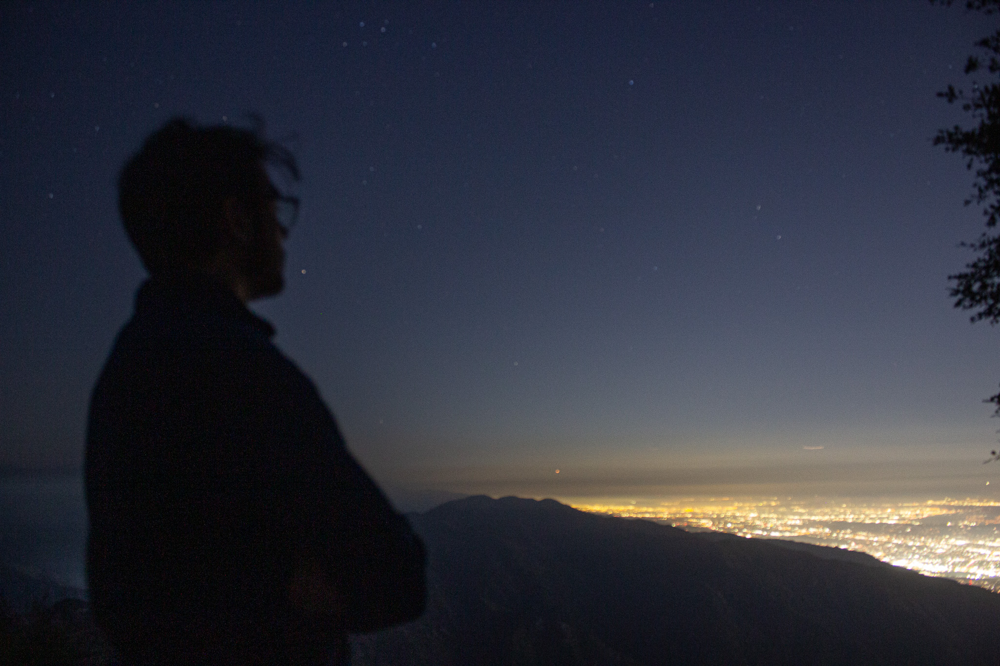

Talks
Hover over the talk entries to see photos!AMIGO and the JWST Interferometer
- Australian Exoplanet Workshop 10, University of Southern Queensland, Brisbane, Australia (2024)
- Best Student Research Talk — Astronomical Society of Australia Annual Scientific Meeting, University of Adelaide, Australia (2025)
- CSIRO Space & Astronomy Co-learnium, Online [Recording here] (2025)
- Institut de Planétologie et d'Astrophysique, Grénoble, France (2025)
- NYRIA Workshop, Max-Planck-Institut für Astronomie, Heidelberg, Germany (2025)
- Leiden Observatory, The Netherlands (2025)
- Macarthur Astronomical Society, WSU Campbelltown Campus, Australia (2026)
- SPIE Astronomical Telescopes + Instrumentation, Bella Center, Copenhagen (2026)
- Best Talk — Mount Stromlo Student Seminar, Mount Stromlo Observatory, Canberra, Australia (2023)
- Sydney University Mathematical Society Seminar, University of Sydney, Australia (2024)
- Sydney Python Meetup, Microsoft Reactor, Sydney, Australia (2025)
- Guest Lecturer — Intro to Dashboarding and Data Visualisation (QBUS5010), University of Sydney Business School, Australia (2025)
- Astro Coffee, Macquarie University, Sydney, Australia (2026)
- Best Student Talk — Australian Exoplanet Workshop 11, Fort Scratchley, Newcastle, Australia (2025)
- Bracewell @ 70, Macquarie University, Sydney, Australia (2026)
- Smith's Hill High School, North Wollongong, Australia (2025)
- SPIE Astronomical Telescopes + Instrumentation, Pacifico Yokohama North, Japan (2024)
Education
Doctor of Philosophy at the University of Sydney
Sydney Institute for Astronomy, School of Physics (2023 – present)
- Supervisors: A/Prof Benjamin Pope & Prof Peter Tuthill
- Research area: Astrophysical image reconstruction and optical simulation
Bachelor of Science (Honours) at the University of Sydney
Sydney Institute for Astronomy, School of Physics (2022)
- Major in Physics
- Honours First Class, final mark of 88.0
- 50% research, 50% coursework components
- Supervisors: Prof. Peter Tuthill & Dr. Barnaby Norris
- Research area: Interferometric imaging of evolved red giant stars
Bachelor of Science at the University of Wollongong
School of Physics, EIS Faculty (2019 – 2021)
- Major in Physics
- Graduated with Distinction

Musical Performances
All performances are vocal performances unless otherwise specified. This list is not exhaustive and excludes any performances done as part of my schooling.| Venue | Act | Year |
|---|---|---|
| Hunter Baillie Memorial Church, Annandale | SUMS Choir | 2026 |
| Verbruggen Hall, Sydney Conservatorium of Music | SCM Chinese Music Ensemble Bowed String Ensemble (on Erhu) | 2026 |
| The Bridge Hotel, Rozelle | The Delusions | 2026 |
| Coledale RSL, Coledale | The Delusions | 2025-2026 |
| Pitt Street Uniting Church, Sydney | SUMS Choir | 2025 |
| Unibar, University of Wollongong | The Delusions | 2025 |
| University of Sydney Great Hall, Camperdown | SUMS Choir | 2024 |
| Hunter Baillie Memorial Church, Annandale | SUMS Choir (performing my composition!) | 2024 |
| Waves, Towradgi | The Delusions | 2024 |
| St. Stephen's Uniting Church, Sydney | SUMS Choir | 2024 |
| University of Sydney Great Hall, Camperdown | SUMS Choir | 2023 |
| Joseph Post Auditorium, Sydney Conservatorium of Music | SUMS Choir | 2023 |
| Unibar, University of Wollongong | The Delusions | 2023 |
| Verbruggen Hall, Sydney Conservatorium of Music | SUMS Choir | 2023 |
| Heritage Hotel, Bulli | The Delusions | 2022 |
| Smith's Hill High School, North Wollongong | Festivus, with Quincessential (on bass and acoustic guitar) | 2018 |
| Heritage Hotel, Bulli | The Delusions | 2018 |
| Smith's Hill High School, North Wollongong | Opening for Kingston County | 2018 |
| Heritage Hotel, Bulli | The Delusions | 2014 |
| Sydney Opera House | Festival of Instrument Music (on bass recorder) | 2012 |
| Sydney Opera House | Festival of Instrument Music (on tenor recorder) | 2011 |
| Sydney Opera House | Festival of Instrument Music (on treble recorder) | 2010 |
| Sydney Opera House | Festival of Instrument Music (on descant recorder) | 2009 |
| Sydney Opera House | Festival of Instrument Music (on descant recorder) | 2008 |